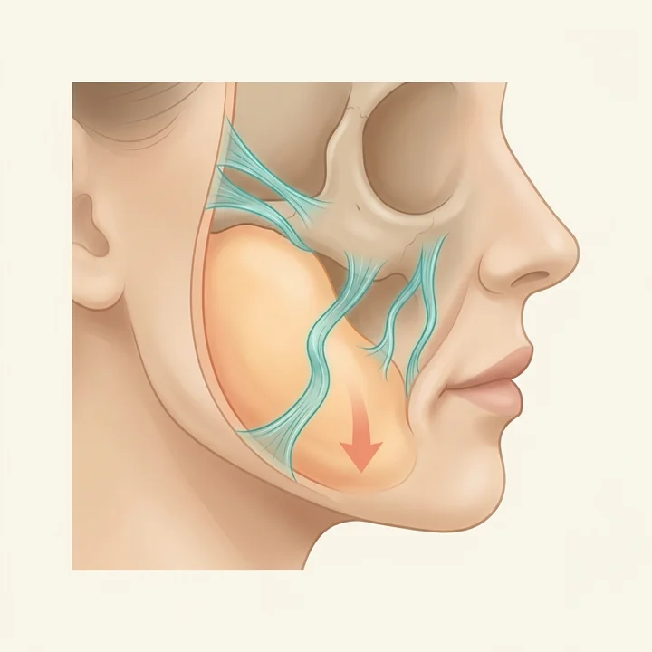
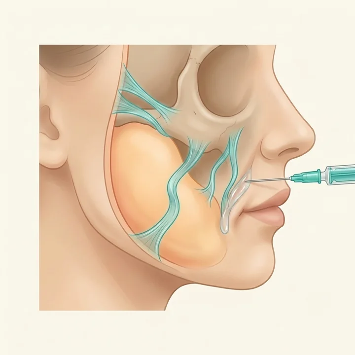
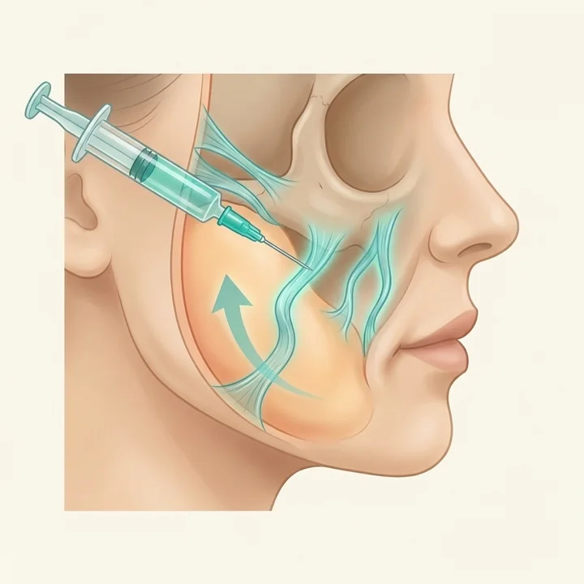

駅徒歩1分平塚駅 西口
診察料0円まず相談から
医師の手打ち1人ずつ設計
WORRYそのほうれい線、
こんなふうに
気になっていませんか
- 笑っていないときも、線が残るようになってきた
- ファンデーションが、線に溜まるようになった
- 疲れて見える・老けて見えるのは、この線のせいな気がする
- ヒアルロン酸で埋めるのは、なんとなく抵抗がある
- 一度埋めたけれど、また気になってきた
WHYほうれい線は、
溝だけの問題では
ないかもしれません
線そのものより、上にある頬のほうに原因があることがあります
支えがしっかりしている

支えがゆるみ、頬が下がって
線が深く見える
※イメージ図です
1肌の中には、皮ふや脂肪を下から支えている「支え」（リガメント＝靭帯）があります。
2年齢とともにこの支えがゆるむと、頬の脂肪が下へ落ちてきます。落ちた分が線の上に乗ることで、ほうれい線はより深く見えるようになります。
3だから溝を埋めるだけでは、上から落ちてくる力に対しては手つかずのまま。ここが「埋めたのに、また気になる」の理由になることがあります。
ジャルプロ スーパーハイドロは、この「支え」そのものを育てることをめざす注入治療です。
切らずに、注入で始められます。落ちてきた頬を、内側から引き上げる方向へアプローチします。
※ほうれい線の原因はお一人ずつ異なります。骨格・皮ふの厚み・表情のくせなど、複数の要素が関わります。診察で医師が見極めます。
2 WAYSほうれい線には、
2つのアプローチ
があります
どちらが良い・悪いではなく、役割が違います

埋める
ヒアルロン酸で、溝にかたちを足す
／

支える
ゆるんだ支えを育てて、落ちてきた頬を引き上げる
肌育リフトで使用するのは、ジャルプロ スーパーハイドロという製剤です。皮ふや脂肪を支える土台となるリガメント（靭帯）にはたらきかけ、肌のハリ・弾力を整えながら、引き締まった印象のフェイスラインをめざします。肌育とリフトアップを、1本で。
1支えにアプローチ
頬を支える土台となるリガメント（靭帯）にはたらきかけます。
2肌のハリ・弾力も同時に
うるおいと、肌をつくる材料になる成分を直接届けます。
3医師の手打ちで設計
注入する位置・深さ・量を、お一人ずつ医師が調整します。
※効果・仕上がり・持続には個人差があります。埋める治療と組み合わせたほうが良い場合もあります。
INGREDIENT3つの成分で
できています
「うるおす」だけでなく「つくる材料」まで入っているのが特徴です
非架橋ヒアルロン酸固めずに、肌へなじみやすい形のヒアルロン酸。うるおいを届けます。
7種類のアミノ酸グリシン・プロリン・リジン・ロイシン・アラニン・バリン・アルギニン。肌のハリ・弾力をつくるための材料になる成分です。
3種類のペプチドアミノ酸のはたらきを支える成分をあわせて配合しています。
※かたちを足す「埋める」治療とは、目的が異なります。
FOR YOUこんな方に
おすすめです
ひとつでも当てはまる方は、お気軽にご相談ください
- ほうれい線が気になり始めた方
- 埋める治療に少し抵抗がある方
- 一度埋めたけれど、また気になってきた方
- たるみは気になるけれど、自然な仕上がりにこだわりたい方
- まずは注入から始めたい方
- 肌の弾力・ハリもあわせて整えたい方
GOALめざせる変化
続けることで、こんな状態をめざします（変化には個人差があります）
いまほうれい線が目立つ／頬のもたつき／ハリ・弾力の物足りなさ
▼
めざす線の印象がやわらぐ／引き締まった印象のフェイスライン／ハリのある肌
※効果を保証するものではありません。仕上がり・持続には個人差があります。
CASE症例
ジャルプロ スーパーハイドロを受けた方の、
肌のハリ・フェイスラインの変化です
こちらはX CLINICでの症例写真です。カジュアルクリニック平塚院では同じ製剤（ジャルプロ スーパーハイドロ）を使用しています。記載の費用は当院（カジュアルクリニック平塚院）の料金です。
主なリスク・副作用
むくみ・腫れ・内出血・左右差・感染・後戻り などがあらわれることがあります。
効果には個人差があります
掲載している症例は一例であり、効果・仕上がり・持続には個人差があります。効果を保証するものではありません。
費用について
自由診療（保険適用外）です。記載の費用はカジュアルクリニック平塚院の料金（税込）です。
2 OPTIONS2つの受け方
注入だけで始めるか、糸リフトと組み合わせるかを選べます
ジャルプロ スーパーハイドロ だけで受ける
糸はまだ考えていない方・初めてたるみに手を打つ方へ
注入だけで始められる方法です。支えを育てながら、肌のハリも一緒に整えていきます。まずここから始める方が多い施術です。
糸リフト ＋ ジャルプロ スーパーハイドロ
しっかり引き上げたい方・上げた状態を長く保ちたい方へ
糸リフトが「物理的に引き上げる」役割、ジャルプロ スーパーハイドロが「支えを育てて保つ」役割を担います。当院では、糸リフトと同時に受ける組み合わせもご用意しています。どちらが合うかは、診察のうえで医師がご提案します。
WHY 3まずは3回が
おすすめな理由
支えを育てる治療は、重ねることで手応えを感じやすくなります
重ねるほど育てやすい
1回でも変化を感じる場合がありますが、複数回の継続でより実感しやすい施術です。
計画が立てやすい
間隔・回数の目安を医師と決めて、無理なく続けられます。
1回あたりが続けやすい
1本ずつ受けるより、3回コースのほうが1回あたりの負担を抑えられます。
通院のめやす
はじめの3回1ヶ月間隔
そのあと3ヶ月〜半年ごと
※回数・間隔はお一人おひとりの状態により異なります。診察時に医師がご提案します。
SAFETY安心して続ける
ために
医師の診察のうえで、無理のない範囲から
医師が適応を確認します診察のうえ、肌状態・体質・既往歴などから受けられるかを判断します。
欧州CEマーク クラスIII 取得の製剤本製剤は、欧州の医療機器認証であるCEマーク（クラスIII）を取得しています。ただし日本国内では未承認医薬品です（詳細はページ下部の重要事項をご確認ください）。
ダウンタイムについて施術後、数日間は腫れ・内出血・赤みが出ることがあります。部位によっては内出血が強く出る場合もあります。
あなたに合わせた計画回数・間隔・本数は、お悩みと状態に合わせて医師がご提案します。
DOWNTIMEダウンタイムの
めやす
出方・続く期間には個人差があります
施術中針を刺すとき、また注入するときに、多少の痛みを感じる場合があります。
直後〜数日腫れ・赤み・内出血が出ることがあります。
部位により内出血が強く出る場合があります。気になる点はいつでもご相談いただけます。
主なリスク・副作用：疼痛・腫れ・赤み・内出血・針跡・しこり・凹凸・アレルギー反応・過敏症・感染・血行障害 等があらわれることがあります。効果・仕上がり・持続には個人差があります。
FLOWご予約から
施術までの流れ
- WEBまたはお電話で、無料カウンセリングをご予約
- ご来院・医師による診察（ほうれい線の原因と適応の確認）
- 治療内容・費用・リスクのご説明にご納得のうえ施術
- 経過に合わせて、継続のご相談
PRICE料金
表示はすべて税込価格です
ジャルプロ スーパーハイドロ
| 1本 | ¥56,000 |
| 3回コース1本 × 3回 | ¥141,0001回あたり ¥47,000 |
| 糸リフトと同時に受ける場合糸6本以上との同時施術。ジャルプロ スーパーハイドロ 1本あたり | ¥42,000 |
| カウンセリング料・診察料 | 無料 |
糸リフトとの組み合わせ
| ジャルプロ スーパーハイドロ ＋ カジュアルリフト6本 | ¥114,000 |
| ジャルプロ スーパーハイドロ ＋ カジュアルリフト8本 | ¥138,000 |
| ジャルプロ スーパーハイドロ ＋ プレミアムリフト6本 | ¥250,800 |
| ジャルプロ スーパーハイドロ ＋ プレミアムリフト8本 | ¥320,400 |
ご確認ください
・自由診療（保険適用外）です。
・モニター価格のご用意もあります。条件がありますので、診察時にご案内します。
・お支払いはキャッシュレスのみとなります。
・表示の価格は当院の通常販売価格（casual-clinic.jp）です。
FAQよくあるご質問
ヒアルロン酸で埋めるのと、どちらがいいですか？
目的が異なります。埋める治療は溝にかたちを足す方法、ジャルプロ スーパーハイドロは頬を支える土台にはたらきかける方法です。ほうれい線の原因はお一人ずつ違うため、診察で状態を確認したうえで医師がご提案します。組み合わせたほうが良い場合もあります。
一度ヒアルロン酸を入れていても受けられますか？
過去の治療歴によって判断が変わります。いつ・どこに・どのくらい入れたかを診察時にお伝えください。医師が確認のうえご提案します。
ダウンタイムはありますか？
数日間は腫れ・内出血・赤みが出ることがあります。部位によっては内出血が強く出る場合もあります。出方や続く期間には個人差があります。
痛みはありますか？
針を刺すときと注入するときに、多少の痛みを感じる場合があります。感じ方には個人差があります。痛みが不安な方は、診察時にご相談ください。
何回くらい必要ですか？
はじめは1ヶ月間隔で3回、そのあとは3ヶ月〜半年ごとの継続をおすすめしています。ただし回数・間隔はお一人おひとりの状態により異なりますので、診察時に医師がご提案します。
糸リフトと同時に受けられますか？
はい。糸リフトと同時に受けていただく組み合わせもご用意しています。適応やご希望に応じて、診察時に医師がご提案します。
誰でも受けられますか？
医師の診察により、肌状態・体質・既往歴などから適応を確認します。妊娠中・授乳中の方など、受けられない場合があります。まずは無料カウンセリングでご相談ください。
予約は必要ですか？
予約なしでもご受診いただけますが、ご予約のお客様を優先してご案内しております。混雑状況によってはお待ちいただく場合がございますので、スムーズなご案内をご希望の方は事前のご予約をおすすめしております。ご予約はWEBから24時間受け付けています。
ACCESSアクセス
- 院名
- カジュアルクリニック平塚院
- 住所
- 〒254-0043 神奈川県平塚市紅谷町8-8 東洋ビル5F
- アクセス
- 平塚駅 西口 徒歩1分
- 電話
- 0463-20-8575
- 診療時間
- 10:00〜19:00（不定休）
本治療に関する重要事項（必ずお読みください）
- 未承認医薬品であること：本施術で使用する製剤「ジャルプロ スーパーハイドロ（JALUPRO Super Hydro）」は、日本国内において医薬品医療機器等法上の承認を得ていない未承認医薬品です。
- 入手経路：本製剤は、医師の判断のもと、国内正規代理店または医療機関専用ルートを通じて適切に輸入・入手しています。
- 国内承認医薬品等の有無：現在、日本国内において「ジャルプロ スーパーハイドロ」と同一の成分構成（非架橋ヒアルロン酸、7種類のアミノ酸、3種類のペプチド）および同様の効能・効果で承認を受けている医薬品・医療機器はありません。
- 諸外国における安全性等：本製剤は、欧州の医療機器認証であるCEマーク（クラスIII）を取得しています。重大な健康被害に関する情報は、現時点で確認されていません。
リスク・副作用
疼痛・腫れ・赤み・内出血・針跡・しこり・凹凸・アレルギー反応・過敏症・感染・血行障害 等があらわれることがあります。効果・仕上がり・持続には個人差があり、効果を保証するものではありません。
費用
自由診療（保険適用外）です。料金は本ページ「料金」欄に記載のとおり（税込）。